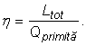
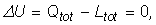
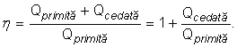

Numim motor termic o maşină care transformă o parte din
energia primită sub formă de căldură în lucru mecanic. (figura 1)
Numim motor termic o maşină care transformă o parte din
energia primită sub formă de căldură în lucru mecanic. (figura 1)
Energia obţinută din alimente îţi permite să acţionezi asupra lumii în care trăieşti, încercând s−o transformi conform dorinţelor şi intereselor tale.
Dorinţele şi interesele omului modern depăşesc cu mult ceea ce ar putea fi făcut prin efort fizic propriu. Producţia mondială de energie (în 2004: 4,3·1019 J) a fost de 13 ori mai mare decât ceea ce am fi obţinut doar prin efort fizic uman (în medie, 5,4·108 J într−un an pentru fiecare persoană activă). Este ca şi când, pentru fiecare dintre noi ar lucra din greu 13 sclavi!
Aproximativ 80% din producţia de energie a omenirii este obţinută prin arderea combustibililor (cărbune, petrol, gaze n naturale). Aproximativ o jumătate din această energie este folosită pentru a fi tranformată (parţial!) în lucru mecanic.
Numim motor termic o maşină care transformă o parte din
energia primită sub formă de căldură în lucru mecanic. (figura 1)
 |
Figura 1. Un motor termic primeşte energie sub formă de caldură şi transformă o parte din aceasta în lucru mecanic. |
Motorul unui automobil are nevoie de căldura degajată prin arderea unui combustibil pentru a funcţiona − este un motor termic (figura 2).
 |
Figura 2. Motorul unui automobil este un motor termic. |
Prin arderea combustibilului, motorul automobilului primeşte energie sub formă de căldură şi transformă o parte din această energie în lucru mecanic. Astfel, roţile automobilului sunt menţinute în rotaţie şi automobilul se poate deplasa rapid, pe distanţe mari. Lucrul mecanic obţinut compensează efectele frecării cu solul şi cu aerul.
Cantitatea de combustibili naturali este limitată şi suntem interesaţi ca o cât mai mare parte din căldura eliberată prin ardere să fie transformată în lucru mecanic.
Numim randament al unui motor termic raportul dintre lucrul
mecanic total şi cantitatea de căldură primită:

Dacă motorul funcţionează ciclic (revine periodic la starea sa iniţială), variatia energiei sale interne este nulă. Conform principiului I al termodinamicii:

lucrul mecanic total este egal cu cantitatea totală de căldură schimbată (primită şi cedată):
Aşadar, randamentul unui motor termic ciclic este:

 Provocarea 1
Provocarea 1
La o privire neatentă, expresia precedentă sugerează un randament supraunitar! Dar aceasta ar fi în contradicţie cu principiul conservării energiei.
Rezolvă contradicţia! Ce semn utilizăm oare pentru căldura cedată?